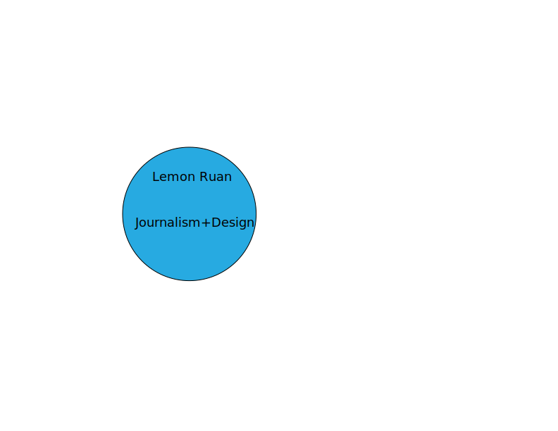

I designed this poster also using Adobe Illustration. It was a little bit difficult for me to constrcut the cat because I had this perfect cat figure in my head but what I constructed was less perfect than what I thought. I intitially only wanted to construct a cat but after I finished drawing the cat, I also wanted to give people a sense of where it is, therefore I placed it outdoor and under the nightsky. I added a photo of a real cat to add some sense of humor.
To download the poster, here is the link
To visit my main homepage to learn about me, please visit this link
